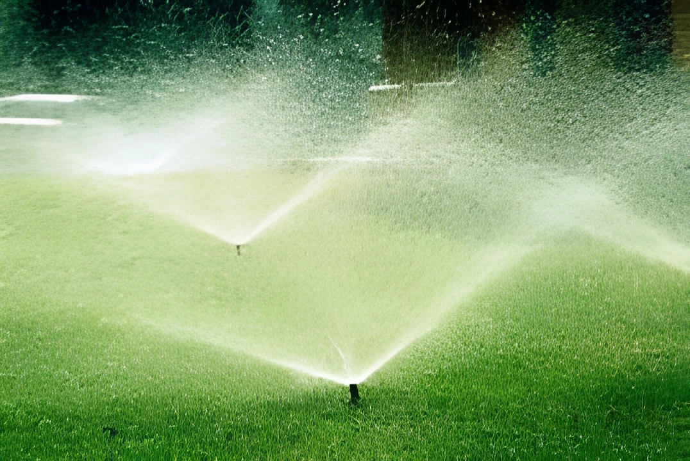

1. Tractors
Versatile machines used for plowing, planting, and harvesting crops efficiently.

2. Drones
Unmanned aerial vehicles used for crop monitoring and spraying.

3. Irrigation Systems
Automated systems such as drip or sprinkler irrigation for water optimization.

4. Precision Agriculture Tools
GPS tools and sensors to monitor farm conditions.

5. Combine Harvesters
Machines that perform reaping, threshing, and winnowing.